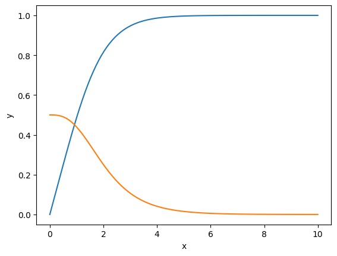

Meissner effect in one dimension#
Programs to solve the GL BVP with an applied field H at x=0 of half infinite superconductor in region x>0.
import numpy as np
from scipy.integrate import solve_bvp
import matplotlib.pyplot as plt
from html.entities import html5
import ipywidgets as widgets
from matplotlib.widgets import TextBox
kappa = widgets.FloatSlider(description="kappa",value=1)
L=widgets.FloatSlider(description="length",value=10)
b0=widgets.FloatSlider(description="applied b",value=.5)
---------------------------------------------------------------------------
ModuleNotFoundError Traceback (most recent call last)
Cell In[1], line 5
3 import matplotlib.pyplot as plt
4 from html.entities import html5
----> 5 import ipywidgets as widgets
6 from matplotlib.widgets import TextBox
7 kappa = widgets.FloatSlider(description="kappa",value=1)
ModuleNotFoundError: No module named 'ipywidgets'
# London boundary conditions: b=da=b0,f=0 at x=0; b=da=0,f=1 at x=L,
def gl(kappa,L,b0):
def fun(x,y):
f = y[0]
df = y[1]
a=y[2]
da=y[3]
return np.vstack((df, kappa*kappa*f*(f**2+a**2-1),da,a*f**2))
def bc(ya, yb):
return np.array([ya[0], yb[0]-1, ya[3]-b0,yb[3]+yb[2]])
rng=[0, L]
x = np.linspace(*rng, 20)
y = np.zeros((4, x.size))
for k in range(x.size): # initialize f to 1
y[0,k]=1
sol = solve_bvp(fun, bc, x, y)
x_plot = np.linspace(*rng, 100)
y_plot = sol.sol(x_plot)[0] # f
plt.plot(x_plot, y_plot)
y_plot = sol.sol(x_plot)[3] # b=da
plt.plot(x_plot, y_plot)
return 0
display(kappa)
display(L)
display(b0)
gl(kappa.value,L.value,b0.value)
plt.xlabel("x")
plt.ylabel("y")
plt.show()

%pip install ipympl
%matplotlib ipympl
import matplotlib.pyplot as plt
import numpy as np
from matplotlib.widgets import TextBox
fig, ax = plt.subplots()
fig.subplots_adjust(bottom=0.2)
t = np.arange(-2.0, 2.0, 0.001)
l, = ax.plot(t, np.zeros_like(t), lw=2)
def submit(expression):
"""
Update the plotted function to the new math *expression*.
*expression* is a string using "t" as its independent variable, e.g.
"t ** 3".
"""
ydata = eval(expression, {'np': np}, {'t': t})
l.set_ydata(ydata)
ax.relim()
ax.autoscale_view()
plt.draw()
axbox = fig.add_axes([0.1, 0.05, 0.8, 0.075])
text_box = TextBox(axbox, "Evaluate", textalignment="center")
text_box.on_submit(submit)
text_box.set_val("t ** 3") # Trigger `submit` with the initial string.
plt.show()
Looking in indexes: https://pypi.org/simple, https://www.piwheels.org/simple
Requirement already satisfied: ipympl in /home/mike/.local/lib/python3.9/site-packages (0.9.3)
Requirement already satisfied: pillow in /usr/lib/python3/dist-packages (from ipympl) (8.1.2)
Requirement already satisfied: traitlets<6 in /home/mike/.local/lib/python3.9/site-packages (from ipympl) (5.14.0)
Requirement already satisfied: matplotlib<4,>=3.4.0 in /home/mike/.local/lib/python3.9/site-packages (from ipympl) (3.8.2)
Requirement already satisfied: ipython<9 in /home/mike/.local/lib/python3.9/site-packages (from ipympl) (8.18.1)
Requirement already satisfied: ipywidgets<9,>=7.6.0 in /home/mike/.local/lib/python3.9/site-packages (from ipympl) (8.1.1)
Requirement already satisfied: ipython-genutils in /home/mike/.local/lib/python3.9/site-packages (from ipympl) (0.2.0)
Requirement already satisfied: numpy in /home/mike/.local/lib/python3.9/site-packages (from ipympl) (1.26.2)
Requirement already satisfied: jedi>=0.16 in /home/mike/.local/lib/python3.9/site-packages (from ipython<9->ipympl) (0.19.1)
Requirement already satisfied: typing-extensions in /home/mike/.local/lib/python3.9/site-packages (from ipython<9->ipympl) (4.9.0)
Requirement already satisfied: pexpect>4.3 in /usr/lib/python3/dist-packages (from ipython<9->ipympl) (4.8.0)
Requirement already satisfied: pygments>=2.4.0 in /usr/lib/python3/dist-packages (from ipython<9->ipympl) (2.7.1)
Requirement already satisfied: exceptiongroup in /home/mike/.local/lib/python3.9/site-packages (from ipython<9->ipympl) (1.2.0)
Requirement already satisfied: prompt-toolkit<3.1.0,>=3.0.41 in /home/mike/.local/lib/python3.9/site-packages (from ipython<9->ipympl) (3.0.43)
Requirement already satisfied: matplotlib-inline in /home/mike/.local/lib/python3.9/site-packages (from ipython<9->ipympl) (0.1.6)
Requirement already satisfied: decorator in /home/mike/.local/lib/python3.9/site-packages (from ipython<9->ipympl) (5.1.1)
Requirement already satisfied: stack-data in /home/mike/.local/lib/python3.9/site-packages (from ipython<9->ipympl) (0.6.3)
Requirement already satisfied: comm>=0.1.3 in /home/mike/.local/lib/python3.9/site-packages (from ipywidgets<9,>=7.6.0->ipympl) (0.2.0)
Requirement already satisfied: jupyterlab-widgets~=3.0.9 in /home/mike/.local/lib/python3.9/site-packages (from ipywidgets<9,>=7.6.0->ipympl) (3.0.9)
Requirement already satisfied: widgetsnbextension~=4.0.9 in /home/mike/.local/lib/python3.9/site-packages (from ipywidgets<9,>=7.6.0->ipympl) (4.0.9)
Requirement already satisfied: parso<0.9.0,>=0.8.3 in /home/mike/.local/lib/python3.9/site-packages (from jedi>=0.16->ipython<9->ipympl) (0.8.3)
Requirement already satisfied: kiwisolver>=1.3.1 in /home/mike/.local/lib/python3.9/site-packages (from matplotlib<4,>=3.4.0->ipympl) (1.4.5)
Requirement already satisfied: fonttools>=4.22.0 in /home/mike/.local/lib/python3.9/site-packages (from matplotlib<4,>=3.4.0->ipympl) (4.47.0)
Requirement already satisfied: cycler>=0.10 in /home/mike/.local/lib/python3.9/site-packages (from matplotlib<4,>=3.4.0->ipympl) (0.12.1)
Requirement already satisfied: contourpy>=1.0.1 in /home/mike/.local/lib/python3.9/site-packages (from matplotlib<4,>=3.4.0->ipympl) (1.2.0)
Requirement already satisfied: packaging>=20.0 in /home/mike/.local/lib/python3.9/site-packages (from matplotlib<4,>=3.4.0->ipympl) (23.1)
Requirement already satisfied: pyparsing>=2.3.1 in /usr/lib/python3/dist-packages (from matplotlib<4,>=3.4.0->ipympl) (2.4.7)
Requirement already satisfied: python-dateutil>=2.7 in /home/mike/.local/lib/python3.9/site-packages (from matplotlib<4,>=3.4.0->ipympl) (2.8.2)
Requirement already satisfied: importlib-resources>=3.2.0 in /home/mike/.local/lib/python3.9/site-packages (from matplotlib<4,>=3.4.0->ipympl) (6.1.1)
Requirement already satisfied: zipp>=3.1.0 in /home/mike/.local/lib/python3.9/site-packages (from importlib-resources>=3.2.0->matplotlib<4,>=3.4.0->ipympl) (3.17.0)
Requirement already satisfied: wcwidth in /home/mike/.local/lib/python3.9/site-packages (from prompt-toolkit<3.1.0,>=3.0.41->ipython<9->ipympl) (0.2.12)
Requirement already satisfied: six>=1.5 in /usr/lib/python3/dist-packages (from python-dateutil>=2.7->matplotlib<4,>=3.4.0->ipympl) (1.16.0)
Requirement already satisfied: executing>=1.2.0 in /home/mike/.local/lib/python3.9/site-packages (from stack-data->ipython<9->ipympl) (2.0.1)
Requirement already satisfied: asttokens>=2.1.0 in /home/mike/.local/lib/python3.9/site-packages (from stack-data->ipython<9->ipympl) (2.4.1)
Requirement already satisfied: pure-eval in /home/mike/.local/lib/python3.9/site-packages (from stack-data->ipython<9->ipympl) (0.2.2)
Note: you may need to restart the kernel to use updated packages.
import matplotlib.pyplot as plt
import numpy as np
from matplotlib.widgets import Button, Slider
# The parametrized function to be plotted
def f(t, amplitude, frequency):
return amplitude * np.sin(2 * np.pi * frequency * t)
t = np.linspace(0, 1, 1000)
# Define initial parameters
init_amplitude = 5
init_frequency = 3
# Create the figure and the line that we will manipulate
fig, ax = plt.subplots()
line, = ax.plot(t, f(t, init_amplitude, init_frequency), lw=2)
ax.set_xlabel('Time [s]')
# adjust the main plot to make room for the sliders
fig.subplots_adjust(left=0.25, bottom=0.25)
# Make a horizontal slider to control the frequency.
axfreq = fig.add_axes([0.25, 0.1, 0.65, 0.03])
freq_slider = Slider(
ax=axfreq,
label='Frequency [Hz]',
valmin=0.1,
valmax=30,
valinit=init_frequency,
)
# Make a vertically oriented slider to control the amplitude
axamp = fig.add_axes([0.1, 0.25, 0.0225, 0.63])
amp_slider = Slider(
ax=axamp,
label="Amplitude",
valmin=0,
valmax=10,
valinit=init_amplitude,
orientation="vertical"
)
# The function to be called anytime a slider's value changes
def update(val):
line.set_ydata(f(t, amp_slider.val, freq_slider.val))
fig.canvas.draw_idle()
# register the update function with each slider
freq_slider.on_changed(update)
amp_slider.on_changed(update)
# Create a `matplotlib.widgets.Button` to reset the sliders to initial values.
resetax = fig.add_axes([0.8, 0.025, 0.1, 0.04])
button = Button(resetax, 'Reset', hovercolor='0.975')
def reset(event):
freq_slider.reset()
amp_slider.reset()
button.on_clicked(reset)
plt.show()